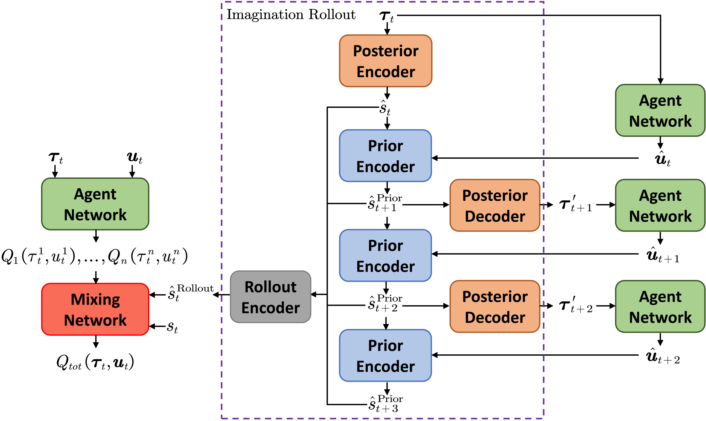

MBVD
World Model Learning
The latent dynamcis p(s^t∣s^t−1, at−1) and posterior q(s^t∣s^t−1, at−1, ot) are optimized to maximize the ELBO
lnp(o1:T∣a0:T, s0)=lnEs1∼q(⋅∣o1, a0)Es2∼q(⋅∣o1, o2, a0, a1)⋯EsT∼q(⋅∣o1:T, a0:T−1)[t=1∏Tq(st∣o≤t, a<t)p(ot∣st)p(st∣st−1, at−1)]≥t=1∑TEs1Es2⋯Estlnp(ot∣st)−Es1Es2⋯Est−1DKL(q(⋅∣o≤t, a<t) ∥ p(⋅∣st−1, at−1))
The posterior distribution can be used for optional auxiliary tasks, e.g. feasible action prediction in StarCraft

The observation history τt=(o≤t, a<t) can be replaced by the joint hidden state ht1:n, since it’s encodes the former through the recurrent network in each agent. The loss function for world model in MBVD consists of
| Loss |
Definition |
| Posterior Reconstruction |
LRC=MSE(τt, τt′) |
| Prior Reconstruction |
LRCPrior=MSE((st−1, at−1), (st−1′, at−1′)) |
| KL Divergence (Balance) |
$\begin{aligned} \mathcal{L}{\mathrm{KL}} &= \alpha D{\mathrm{KL}} \Big( \operatorname{sg}[q(\cdot \mid h_{t})]\ \ |
| Prior Regularizer |
$\mathcal{L}{\mathrm{KL}}^{\mathrm{reg}} = D{\mathrm{KL}} \Big( p(\cdot \mid s_{t - 1},\ a_{t - 1})\ \ |
| Feasible Action BCE Loss |
LFA=BCE(At, At′) |
Value Learning
The imagined states contain information about the possible states of the future, which can help the evaluation of global value. MBVD take the current state and extra multi-step latent rollout state as input in mix network
Qtot(τt, at, st, s^tRollout∣ψ)=f[Q1(τt1, at1), Q2(τt2, at2), ⋯, Qn(τtn, atn)∣st, s^tRollout]

where s^tRollout is the recurrent encoding of k step rollout latent state generated by learned dynamics. The value function is trained to minimize the square of TD error
LRL=[rt+γQtot(τt+1, at+1, st+1, s^t+1Rollout∣ψ−)−Qtot(τt, at, st, s^tRollout∣ψ)]2